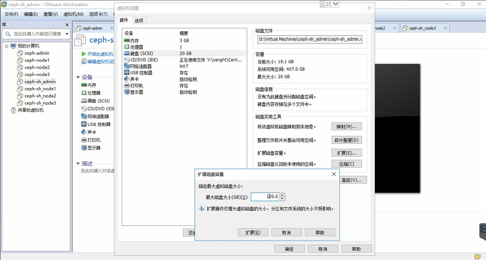

scaleDisk
centos 7 硬盘扩容
资源
- 硬盘扩容
VMware虚拟机中CentOS 7的硬盘空间扩容
扩大VMware虚拟机中CentOS 7的硬盘空间
给VMware下的Linux扩展磁盘空间(以CentOS7)
虚拟机下扩容磁盘(centos7) - 文件系统管理
CentOS 7磁盘分区及文件系统管理 - lvm管理
centos下LVM配置与管理
linux CentOS 7 中LVM讲解配置实例及磁盘扩容等
步骤
查看挂载点
[ceph-sh-admin@ceph-sh-admin ~]$ df -h Filesystem Size Used Avail Use% Mounted on /dev/mapper/centos-root 17G 17G 20K 100% / devtmpfs 476M 0 476M 0% /dev tmpfs 488M 0 488M 0% /dev/shm tmpfs 488M 51M 437M 11% /run tmpfs 488M 0 488M 0% /sys/fs/cgroup /dev/sda1 1014M 130M 885M 13% /boot tmpfs 98M 0 98M 0% /run/user/1000 tmpfs 98M 0 98M 0% /run/user/0扩展vmware硬盘空间 
硬盘分区和格式化
[ceph-sh-admin@ceph-sh-admin ~]$ sudo fdisk -l Disk /dev/sda: 128.8 GB, 128849018880 bytes, 251658240 sectors Units = sectors of 1 * 512 = 512 bytes Sector size (logical/physical): 512 bytes / 512 bytes I/O size (minimum/optimal): 512 bytes / 512 bytes Disk label type: dos Disk identifier: 0x000a9fcc Device Boot Start End Blocks Id System /dev/sda1 * 2048 2099199 1048576 83 Linux /dev/sda2 2099200 41943039 19921920 8e Linux LVM Disk /dev/mapper/centos-root: 18.2 GB, 18249416704 bytes, 35643392 sectors Units = sectors of 1 * 512 = 512 bytes Sector size (logical/physical): 512 bytes / 512 bytes I/O size (minimum/optimal): 512 bytes / 512 bytes Disk /dev/mapper/centos-swap: 2147 MB, 2147483648 bytes, 4194304 sectors Units = sectors of 1 * 512 = 512 bytes Sector size (logical/physical): 512 bytes / 512 bytes I/O size (minimum/optimal): 512 bytes / 512 bytes[ceph-sh-admin@ceph-sh-admin ~]$ sudo fdisk /dev/sda Welcome to fdisk (util-linux 2.23.2). Changes will remain in memory only, until you decide to write them. Be careful before using the write command. Command (m for help): m Command action a toggle a bootable flag b edit bsd disklabel c toggle the dos compatibility flag d delete a partition g create a new empty GPT partition table G create an IRIX (SGI) partition table l list known partition types m print this menu n add a new partition o create a new empty DOS partition table p print the partition table q quit without saving changes s create a new empty Sun disklabel t change a partition's system id u change display/entry units v verify the partition table w write table to disk and exit x extra functionality (experts only) Command (m for help): p Disk /dev/sda: 128.8 GB, 128849018880 bytes, 251658240 sectors Units = sectors of 1 * 512 = 512 bytes Sector size (logical/physical): 512 bytes / 512 bytes I/O size (minimum/optimal): 512 bytes / 512 bytes Disk label type: dos Disk identifier: 0x000a9fcc Device Boot Start End Blocks Id System /dev/sda1 * 2048 2099199 1048576 83 Linux /dev/sda2 2099200 41943039 19921920 8e Linux LVM Command (m for help): n Partition type: p primary (2 primary, 0 extended, 2 free) e extended Select (default p): p Partition number (3,4, default 3): First sector (41943040-251658239, default 41943040): Using default value 41943040 Last sector, +sectors or +size{K,M,G} (41943040-251658239, default 251658239): Using default value 251658239 Partition 3 of type Linux and of size 100 GiB is set Command (m for help): t Partition number (1-3, default 3): 3 Hex code (type L to list all codes): 8e Changed type of partition 'Linux' to 'Linux LVM' Command (m for help): w The partition table has been altered! Calling ioctl() to re-read partition table. WARNING: Re-reading the partition table failed with error 16: Device or resource busy. The kernel still uses the old table. The new table will be used at the next reboot or after you run partprobe(8) or kpartx(8) Syncing disks.[ceph-sh-admin@ceph-sh-admin ~]$ sudo fdisk -l Disk /dev/sda: 128.8 GB, 128849018880 bytes, 251658240 sectors Units = sectors of 1 * 512 = 512 bytes Sector size (logical/physical): 512 bytes / 512 bytes I/O size (minimum/optimal): 512 bytes / 512 bytes Disk label type: dos Disk identifier: 0x000a9fcc Device Boot Start End Blocks Id System /dev/sda1 * 2048 2099199 1048576 83 Linux /dev/sda2 2099200 41943039 19921920 8e Linux LVM /dev/sda3 41943040 251658239 104857600 8e Linux LVM Disk /dev/mapper/centos-root: 18.2 GB, 18249416704 bytes, 35643392 sectors Units = sectors of 1 * 512 = 512 bytes Sector size (logical/physical): 512 bytes / 512 bytes I/O size (minimum/optimal): 512 bytes / 512 bytes Disk /dev/mapper/centos-swap: 2147 MB, 2147483648 bytes, 4194304 sectors Units = sectors of 1 * 512 = 512 bytes Sector size (logical/physical): 512 bytes / 512 bytes I/O size (minimum/optimal): 512 bytes / 512 bytes [ceph-sh-admin@ceph-sh-admin ~]$ ls /dev/sd* /dev/sda /dev/sda1 /dev/sda2 /dev/sda3[ceph-sh-admin@ceph-sh-admin ~]$ sudo mkfs.xfs -f /dev/sda3 meta-data=/dev/sda3 isize=512 agcount=4, agsize=6553600 blks = sectsz=512 attr=2, projid32bit=1 = crc=1 finobt=0, sparse=0 data = bsize=4096 blocks=26214400, imaxpct=25 = sunit=0 swidth=0 blks naming =version 2 bsize=4096 ascii-ci=0 ftype=1 log =internal log bsize=4096 blocks=12800, version=2 = sectsz=512 sunit=0 blks, lazy-count=1 realtime =none extsz=4096 blocks=0, rtextents=0添加LVM到已有LVM组，实现扩容
[ceph-sh-admin@ceph-sh-admin ~]$ sudo lvm lvm> pvs PV VG Fmt Attr PSize PFree /dev/sda2 centos lvm2 a-- <19.00g 0 lvm> pvcreate /dev/sda3 WARNING: xfs signature detected on /dev/sda3 at offset 0. Wipe it? [y/n]: y Wiping xfs signature on /dev/sda3. Physical volume "/dev/sda3" successfully created. lvm> pvs PV VG Fmt Attr PSize PFree /dev/sda2 centos lvm2 a-- <19.00g 0 /dev/sda3 lvm2 --- 100.00g 100.00g lvm> vgs VG #PV #LV #SN Attr VSize VFree centos 1 2 0 wz--n- <19.00g 0 lvm> vgdisplay -v --- Volume group --- VG Name centos System ID Format lvm2 Metadata Areas 1 Metadata Sequence No 7 VG Access read/write VG Status resizable MAX LV 0 Cur LV 2 Open LV 2 Max PV 0 Cur PV 1 Act PV 1 VG Size <19.00 GiB PE Size 4.00 MiB Total PE 4863 Alloc PE / Size 4863 / <19.00 GiB Free PE / Size 0 / 0 VG UUID IfEni0-lRDx-UB4N-s8AW-GDdO-sfRN-OThx5Y --- Logical volume --- LV Path /dev/centos/swap LV Name swap VG Name centos LV UUID O1UpfF-00v7-MLW6-Dp3S-u4m1-Xtia-p74QSz LV Write Access read/write LV Creation host, time ceph-sh-admin, 2018-08-01 21:37:16 +0800 LV Status available # open 2 LV Size 2.00 GiB Current LE 512 Segments 1 Allocation inherit Read ahead sectors auto \- currently set to 8192 Block device 253:1 --- Logical volume --- LV Path /dev/centos/root LV Name root VG Name centos LV UUID 6bmpXC-9IaE-wtnr-vv2H-DKDL-RoCZ-CdWxE6 LV Write Access read/write LV Creation host, time ceph-sh-admin, 2018-08-01 21:37:16 +0800 LV Status available # open 1 LV Size <17.00 GiB Current LE 4351 Segments 1 Allocation inherit Read ahead sectors auto \- currently set to 8192 Block device 253:0 --- Physical volumes --- PV Name /dev/sda2 PV UUID BC9HCz-LKj6-7rVo-JuVJ-3Zb2-GcYx-Ahcifr PV Status allocatable Total PE / Free PE 4863 / 0 lvm> vgextend centos /dev/sda3 Volume group "centos" successfully extended lvm> vgdisplay -v --- Volume group --- VG Name centos System ID Format lvm2 Metadata Areas 2 Metadata Sequence No 8 VG Access read/write VG Status resizable MAX LV 0 Cur LV 2 Open LV 2 Max PV 0 Cur PV 2 Act PV 2 VG Size 118.99 GiB PE Size 4.00 MiB Total PE 30462 Alloc PE / Size 4863 / <19.00 GiB Free PE / Size 25599 / <100.00 GiB VG UUID IfEni0-lRDx-UB4N-s8AW-GDdO-sfRN-OThx5Y --- Logical volume --- LV Path /dev/centos/swap LV Name swap VG Name centos LV UUID O1UpfF-00v7-MLW6-Dp3S-u4m1-Xtia-p74QSz LV Write Access read/write LV Creation host, time ceph-sh-admin, 2018-08-01 21:37:16 +0800 LV Status available # open 2 LV Size 2.00 GiB Current LE 512 Segments 1 Allocation inherit Read ahead sectors auto \- currently set to 8192 Block device 253:1 --- Logical volume --- LV Path /dev/centos/root LV Name root VG Name centos LV UUID 6bmpXC-9IaE-wtnr-vv2H-DKDL-RoCZ-CdWxE6 LV Write Access read/write LV Creation host, time ceph-sh-admin, 2018-08-01 21:37:16 +0800 LV Status available # open 1 LV Size <17.00 GiB Current LE 4351 Segments 1 Allocation inherit Read ahead sectors auto \- currently set to 8192 Block device 253:0 --- Physical volumes --- PV Name /dev/sda2 PV UUID BC9HCz-LKj6-7rVo-JuVJ-3Zb2-GcYx-Ahcifr PV Status allocatable Total PE / Free PE 4863 / 0 PV Name /dev/sda3 PV UUID bOlkL1-YqO6-b8Te-nEy1-mSzM-m9qO-yvlgks PV Status allocatable Total PE / Free PE 25599 / 25599 lvm> lvextend -l+25599 /dev/mapper/centos-root Size of logical volume centos/root changed from <17.00 GiB (4351 extents) to 116.99 GiB (29950 extents). Logical volume centos/root successfully resized. lvm> lvdisplay --- Logical volume --- LV Path /dev/centos/swap LV Name swap VG Name centos LV UUID O1UpfF-00v7-MLW6-Dp3S-u4m1-Xtia-p74QSz LV Write Access read/write LV Creation host, time ceph-sh-admin, 2018-08-01 21:37:16 +0800 LV Status available # open 2 LV Size 2.00 GiB Current LE 512 Segments 1 Allocation inherit Read ahead sectors auto \- currently set to 8192 Block device 253:1 --- Logical volume --- LV Path /dev/centos/root LV Name root VG Name centos LV UUID 6bmpXC-9IaE-wtnr-vv2H-DKDL-RoCZ-CdWxE6 LV Write Access read/write LV Creation host, time ceph-sh-admin, 2018-08-01 21:37:16 +0800 LV Status available # open 1 LV Size 116.99 GiB Current LE 29950 Segments 2 Allocation inherit Read ahead sectors auto \- currently set to 8192 Block device 253:0 lvm> vgdisplay -v --- Volume group --- VG Name centos System ID Format lvm2 Metadata Areas 2 Metadata Sequence No 9 VG Access read/write VG Status resizable MAX LV 0 Cur LV 2 Open LV 2 Max PV 0 Cur PV 2 Act PV 2 VG Size 118.99 GiB PE Size 4.00 MiB Total PE 30462 Alloc PE / Size 30462 / 118.99 GiB Free PE / Size 0 / 0 VG UUID IfEni0-lRDx-UB4N-s8AW-GDdO-sfRN-OThx5Y --- Logical volume --- LV Path /dev/centos/swap LV Name swap VG Name centos LV UUID O1UpfF-00v7-MLW6-Dp3S-u4m1-Xtia-p74QSz LV Write Access read/write LV Creation host, time ceph-sh-admin, 2018-08-01 21:37:16 +0800 LV Status available # open 2 LV Size 2.00 GiB Current LE 512 Segments 1 Allocation inherit Read ahead sectors auto \- currently set to 8192 Block device 253:1 --- Logical volume --- LV Path /dev/centos/root LV Name root VG Name centos LV UUID 6bmpXC-9IaE-wtnr-vv2H-DKDL-RoCZ-CdWxE6 LV Write Access read/write LV Creation host, time ceph-sh-admin, 2018-08-01 21:37:16 +0800 LV Status available # open 1 LV Size 116.99 GiB Current LE 29950 Segments 2 Allocation inherit Read ahead sectors auto \- currently set to 8192 Block device 253:0 --- Physical volumes --- PV Name /dev/sda2 PV UUID BC9HCz-LKj6-7rVo-JuVJ-3Zb2-GcYx-Ahcifr PV Status allocatable Total PE / Free PE 4863 / 0 PV Name /dev/sda3 PV UUID bOlkL1-YqO6-b8Te-nEy1-mSzM-m9qO-yvlgks PV Status allocatable Total PE / Free PE 25599 / 0 lvm> pvdisplay --- Physical volume --- PV Name /dev/sda2 VG Name centos PV Size <19.00 GiB / not usable 3.00 MiB Allocatable yes (but full) PE Size 4.00 MiB Total PE 4863 Free PE 0 Allocated PE 4863 PV UUID BC9HCz-LKj6-7rVo-JuVJ-3Zb2-GcYx-Ahcifr --- Physical volume --- PV Name /dev/sda3 VG Name centos PV Size 100.00 GiB / not usable 4.00 MiB Allocatable yes (but full) PE Size 4.00 MiB Total PE 25599 Free PE 0 Allocated PE 25599 PV UUID bOlkL1-YqO6-b8Te-nEy1-mSzM-m9qO-yvlgks lvm> quit Exiting.xfs扩容
[ceph-sh-admin@ceph-sh-admin ~]$ sudo xfs_growfs /dev/mapper/centos-root meta-data=/dev/mapper/centos-root isize=512 agcount=4, agsize=1113856 blks = sectsz=512 attr=2, projid32bit=1 = crc=1 finobt=0 spinodes=0 data = bsize=4096 blocks=4455424, imaxpct=25 = sunit=0 swidth=0 blks naming =version 2 bsize=4096 ascii-ci=0 ftype=1 log =internal bsize=4096 blocks=2560, version=2 = sectsz=512 sunit=0 blks, lazy-count=1 realtime =none extsz=4096 blocks=0, rtextents=0 data blocks changed from 4455424 to 30668800再次查看硬盘空间
[ceph-sh-admin@ceph-sh-admin ~]$ df -h Filesystem Size Used Avail Use% Mounted on /dev/mapper/centos-root 17G 17G 20K 100% / devtmpfs 476M 0 476M 0% /dev tmpfs 488M 0 488M 0% /dev/shm tmpfs 488M 51M 437M 11% /run tmpfs 488M 0 488M 0% /sys/fs/cgroup /dev/sda1 1014M 130M 885M 13% /boot tmpfs 98M 0 98M 0% /run/user/1000 tmpfs 98M 0 98M 0% /run/user/0 [ceph-sh-admin@ceph-sh-admin ~]$ df -Th Filesystem Type Size Used Avail Use% Mounted on /dev/mapper/centos-root xfs 117G 17G 101G 15% / devtmpfs devtmpfs 1.4G 0 1.4G 0% /dev tmpfs tmpfs 1.4G 0 1.4G 0% /dev/shm tmpfs tmpfs 1.4G 9.4M 1.4G 1% /run tmpfs tmpfs 1.4G 0 1.4G 0% /sys/fs/cgroup /dev/sda1 xfs 1014M 130M 885M 13% /boot tmpfs tmpfs 283M 0 283M 0% /run/user/1000